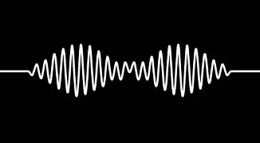

Have you got colour in your cheeks?
Do you ever get that fear that you can't shift the type
That sticks around like summat in your teeth?
Are there some aces up your sleeve?
Have you no idea that you're in deep?
I've dreamt about you nearly every night this week
How many secrets can you keep?
'Cause there's this tune I found that makes me think of you somehow
And I play it on repeat until I fall asleep
Spillin' drinks on my settee
(Do I wanna know) if this feelin' flows both ways?
(Sad to see you go) was sorta hopin' that you'd stay
(Baby, we both know) that the nights were mainly made
For sayin' things that you can't say tomorrow day
Crawlin' back to you
Ever thought of callin' when you've had a few?
'Cause I always do
Maybe I'm too
Busy being yours to fall for somebody new
Now I've thought it through
Crawlin' back to you
So have you got the guts?
Been wonderin' if your heart's still open
And if so, I wanna know what time it shuts
Simmer down and pucker up
I'm sorry to interrupt, it's just I'm constantly on the cusp
Of tryin' to kiss you
I don't know if you feel the same as I do
But we could be together
If you wanted to
(Do I wanna know) if this feelin' flows both ways?
(Sad to see you go) was sorta hopin' that you'd stay
(Baby, we both know) that the nights were mainly made
For sayin' things that you can't say tomorrow day
Crawlin' back to you (crawlin' back to you)
Ever thought of callin' when you've had a few? (You've had a few)
'Cause I always do ('cause I always do)
Maybe I'm too (maybe I'm too busy)
Busy being yours to fall for somebody new (being yours)
Now I've thought it through
Crawlin' back to you
(Do I wanna know) if this feelin' flows both ways?
(Sad to see you go) was sorta hopin' that you'd stay
(Baby, we both know) that the nights were mainly made
For sayin' things that you can't say tomorrow day
(Do I wanna know?) Too busy bein' yours to fall
(Sad to see you go) ever thought of callin', darlin'?
(Do I wanna know?) Do you want me crawlin' back to you?